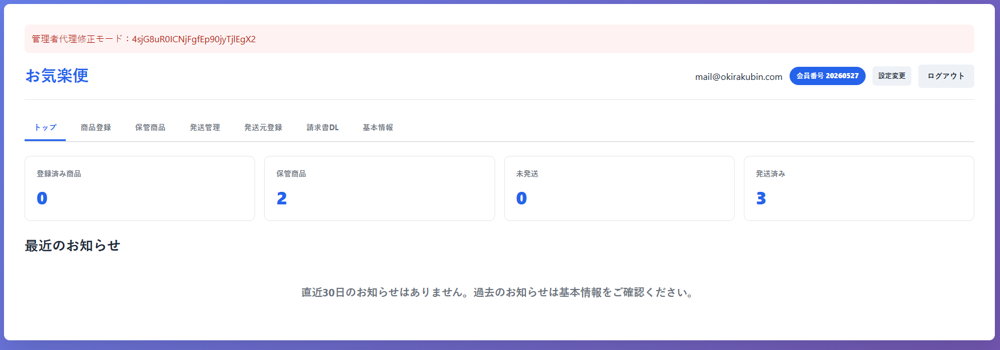
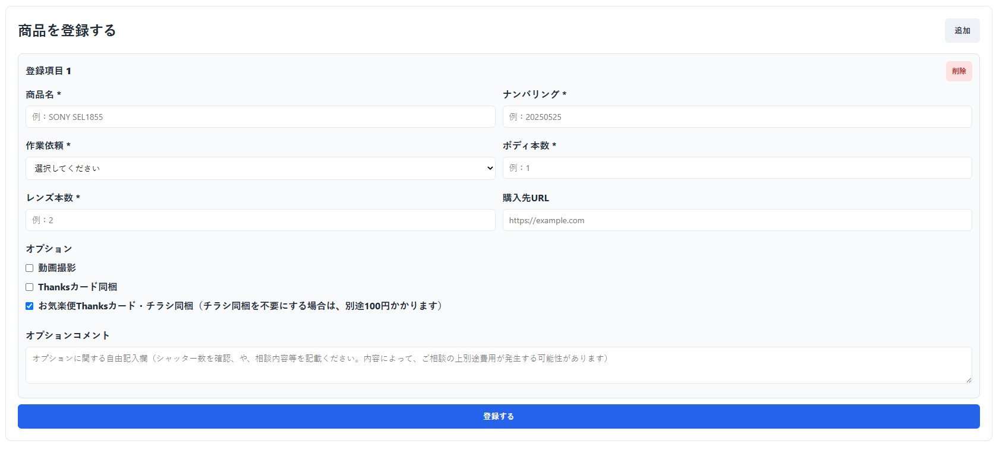
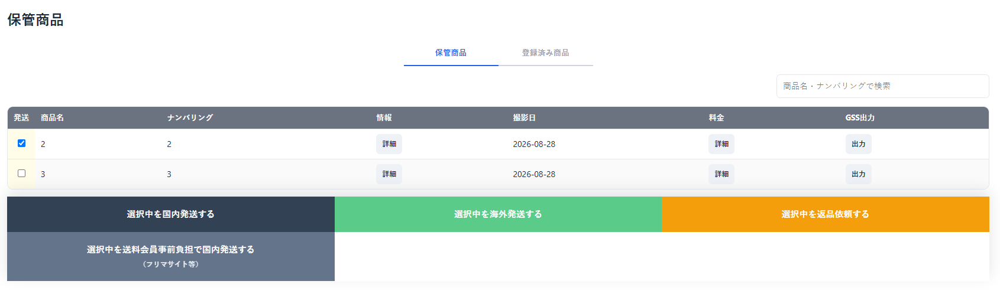
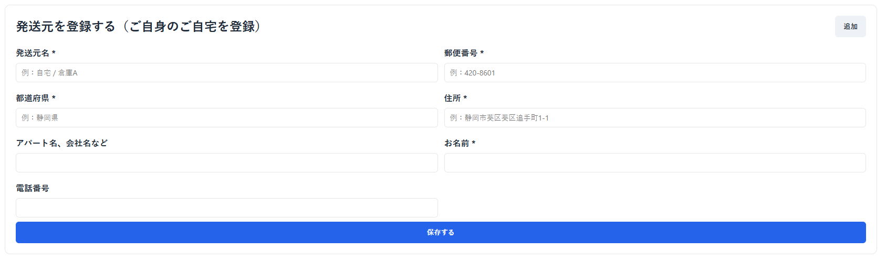
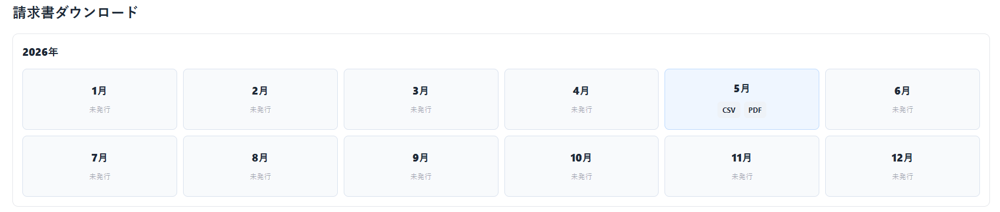
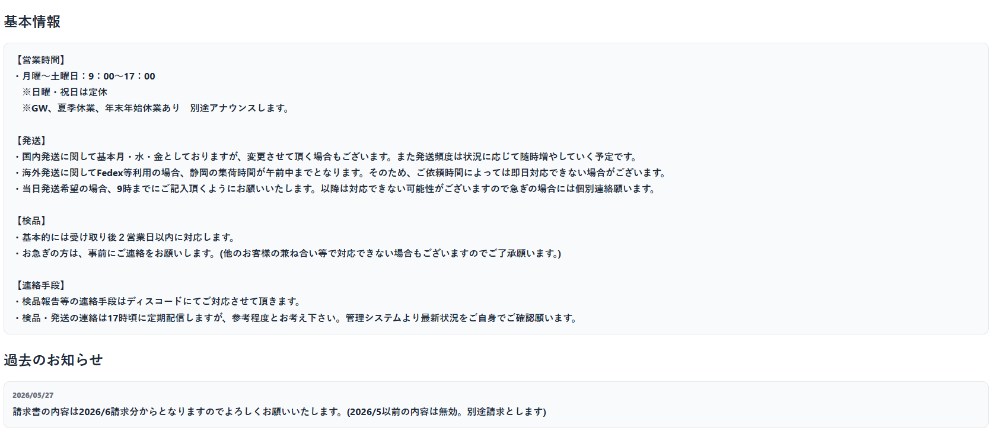

ログイン後、最初に表示される画面です。現在の商品状況と、最近のお知らせを確認できます。

確認できる内容
- 登録済み商品数
- 保管商品数
- 未発送数
- 発送済み数
- 最近のお知らせ
上部のタブから、商品登録、保管商品、発送管理、発送元登録、請求書DL、基本情報へ移動できます。
商品登録から保管商品、発送依頼、請求書ダウンロードまでの基本操作をまとめたマニュアルです。
ログイン後、最初に表示される画面です。現在の商品状況と、最近のお知らせを確認できます。

上部のタブから、商品登録、保管商品、発送管理、発送元登録、請求書DL、基本情報へ移動できます。
新しく検品や撮影を依頼する商品を登録します。

登録は「登録する」ボタンを押したときだけ実行されます。必要項目が未入力の場合は登録できません。
検品・撮影が完了し、保管中の商品を確認できます。

「出力」ボタンを押すと、設定済みのGoogleスプレッドシートに検品結果を出力します。
| 列 | 出力内容 |
|---|---|
| A | 出力日 |
| B | 商品名 |
| C | ナンバリング |
| D | 検品日 |
| E | 確認結果 |
| F | 写真URL |
| G | 生成結果 |
発送依頼で使用する発送元情報を登録します。ご自身の自宅や倉庫などを登録できます。

発送依頼時に発送元を選択できるようになります。
管理者が発行した請求書を月ごとにダウンロードできます。

請求書は管理者が発行した後に表示されます。未発行の月はダウンロードできません。
営業時間、発送、検品、連絡手段などの基本情報を確認できます。

トップには直近のお知らせが表示されます。過去のお知らせや基本ルールは基本情報から確認します。
| 画面 | 主な用途 |
|---|---|
| トップ | 件数とお知らせを確認する |
| 商品登録 | 新しい商品を登録する |
| 保管商品 | 検品済み商品の確認、発送依頼、GSS出力を行う |
| 発送管理 | 未発送・発送済みの商品を確認する |
| 発送元登録 | 発送依頼で使う発送元を登録する |
| 請求書DL | 発行済みの請求書をダウンロードする |
| 基本情報 | 営業時間や運用ルールを確認する |